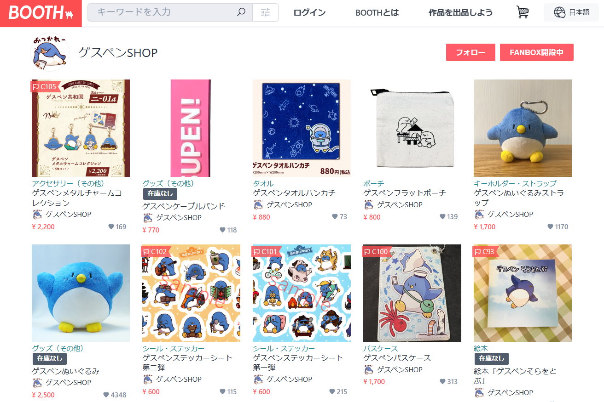

ゲスペン
このページでは私の最推しであるゲスペンについて語ります！

出典：ゲスペンアクリルスタンド『玉座』 - ゲスペンSHOP - BOOTH（URL）
はい、かわいい。すき。
正直、この画像だけでも魅力は伝わると思いますが、ちゃんと布教したいのでしっかり書いていきたいと思います。

出典：Xユーザーのたけぉさん_ 「あけましておめでとうございます🎍 みんなの2024年が良い年になりますように🗻🐧🍆 #ゲスペン https___t.co_jhxGuCJL31」 _ X （URL）
それでは手始めに、『そもそもゲスペンとは？』から解説していきます。
ゲスペンとは、生放送主及びゲーム実況者である『たけぉ』が考案したキャラクターである。
2012年ごろから自身のTwitterアカウントで使用しているクッソ可愛いペンギンの顔文字「∧( 'Θ' )∧」の名称。
愛くるしいペンギンという見た目のかわいらしさを盾に、辛辣・ゲスい発言をすることからゲスペンという名前がつけられた。
イラストでは全体的にふっくらとした体系で、スカイブルーの体に白いお腹のペンギンとして描かれている。
引用：ゲスペンとは [単語記事] - ニコニコ大百科（URL）
要約すると、実況者の『たけぉ』さんが『∧( 'Θ' )∧』の顔文字から生み出した、キュートなペンギンのマスコットです！

出典：Xユーザーのたけぉさん_ 「メリークリスマス！！🐧🐧 良い子にしてたらサンタさんが来るよ🎅 #ゲスペン https___t.co_6kGleCMEe8」 _ X （URL）
次に、『ゲスペンの魅力は？』について解説していきます。
ゲスペンの一番の魅力とはずばり愛くるしい見た目とは裏腹に、性格がゲスいというギャップです！
上のイラストもとても可愛いのですが、ちゃっかり金の延べ棒をサンタさんに頼むほど金にがめつい一面もあるなど、個性的で可愛いのに面白さもある素敵なキャラクターなんです！
最後にゲスペンの魅力の伝わる動画や、ゲスペンのグッズについて紹介いたします！
より深くゲスペンについて知りたいと思った方は下記のプレイリストをご覧ください！
きっと恐らく多分知れる……はず？
ゲスペン生態調査シリーズ
そして、ゲスペンのグッズはBoothにて販売されております。
↑商品一覧の一部のスクリーンショット
私のおすすめは『ゲスペンそらをとぶ』という絵本と『ゲスペンぬいぐるみストラップ』です！
こちらもぜひ見に行っていただきたいです！